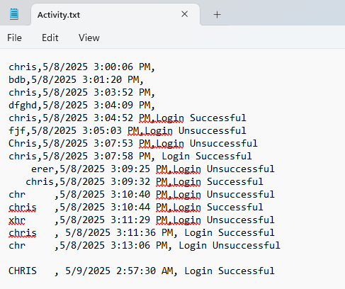
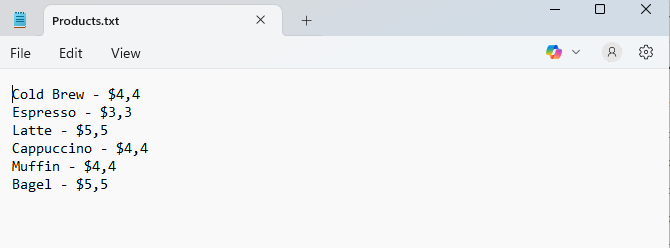
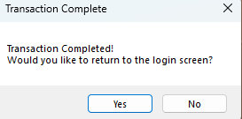

Project Overview
This project was designed as a desktop-style vending machine simulation. Users can select products, complete a transaction, view a receipt, and track activity in a log.
Although it is more software-oriented than the analytics projects, it shows my comfort with building structured workflows and thinking through how users move through an application.
C#
Visual Studio
File Handling
User Workflow
Main Interface

Key Features
Product Selection
Users can choose products and move through a simple transaction flow.
Receipt Output
The app summarizes the completed purchase in a receipt-style screen.
Activity Log
Transactions can be reviewed through a basic activity log view.
File-Based Data
Project data is handled with simple local storage to support the app workflow.
More Screenshots



What I Learned
- How to structure a user workflow from selection to completion.
- How to manage state across a small application.
- How file-based storage can support simple project data needs.
- How interface decisions affect whether a process feels clear to the user.